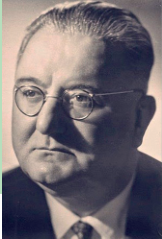
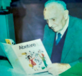
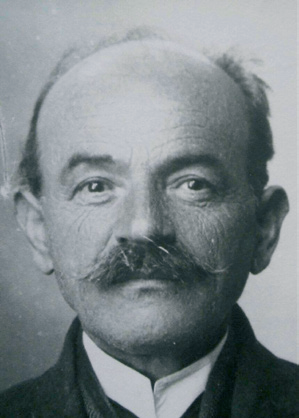
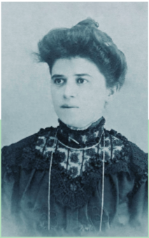

Jeta në Kosovë dikur dhe sot
Njerëzit që nuk harrohen
Situata 1.
Ne jemi të lumtur që kemi shkollat në gjuhën shqipe. Cilët janë njerëzit që kontribuuan për hapjen e tyre? Ata janë shumë. Mëso për disa nga ta, të cilët janë të paharrueshëm për ne dhe gjeneratat që do të vijnë.

Ernest Koliqi pati rol të rëndësishëm në hapjen e shkollave shqipe në Kosovë. Për shkak të mungesës së mësuesve në Kosovë, ai u kujdes që të sillte mësues nga Shqipëria.

Disa nga mësuesit që ndikuan në përhapjen e dijes në Kosovë ishin: Mehmet Gjevori, Tajar Hatipi, Vezire Xherina, Beqir Kastrati e shumë të tjerë, të cilët lanë gjurmë të pashlyeshme në arsimin e vendit tonë.

Mati Logoreci ishte mësuesi i parë në shkollën “Shkolla Shqipe e Djemve” në Prizren.

Sevasti Qiriazi ishte atdhetare dhe nismëtare e arsimit shqip për gra.
Sot, në vendin tonë, punon një numër i madh i mësimdhënësve profesionistë, të cilët janë të vetëdijshëm për përgjegjësinë që kanë për arsimimin e brezave të rinj dhe punojnë me përkushtim e dashuri.